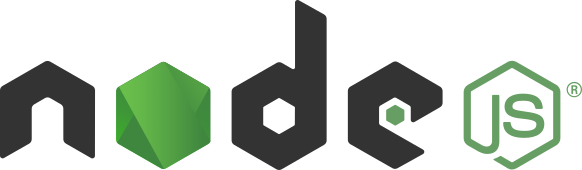
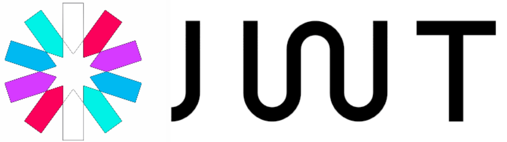

Kahibalo
Service web REST et application web permettant de gérer des articles de culture générale
Projet personnel (en cours de développement)
Le but de Kahibalo est de fournir une application web permettant de lire et de rédiger des articles de culture générale. Pour ce faire, le projet est constitué de 2 services :
- Le service web REST permettant d'accéder et de gérer les ressources via des représentations JSON;
- L'application web s'interfaçant avec le service web afin d'accéder aux différentes fonctionnalités via un navigateur web.
Voici les fonctionnalités implémentées ou en cours de développement :
- Visualisation des articles disponibles avec la possibilité de les filtrer par tags ;
- Visualisation, création, modification et suppression des articles ;
- Authentification permettant l'autorisation de la création, la modification et la suppression des ressources ;
- Redirection vers la visualisation d'un article aléatoire.
- Github (service web) https://github.com/Romain-Guillot/kahibalo-data-server
- Github (application web) https://github.com/Romain-Guillot/kahibalo-web-server
Technologies
-

Les deux services sont développés avec Node.js
-

Afin de rapidement développer une architecture de haute qualité, scalbale et évolutive, le framework Nest.js est utilisé par dessus Node.js pour développer les deux services
-

Les données de l'application sont gérées avec MongoDB, un système de gestion de base de données NoSQL orienté documents
-

L'authorisation d'accès aux ressources est gérée avec le système de token JWT
-

Le déploiement des services sur mon serveur est géré avec Docker